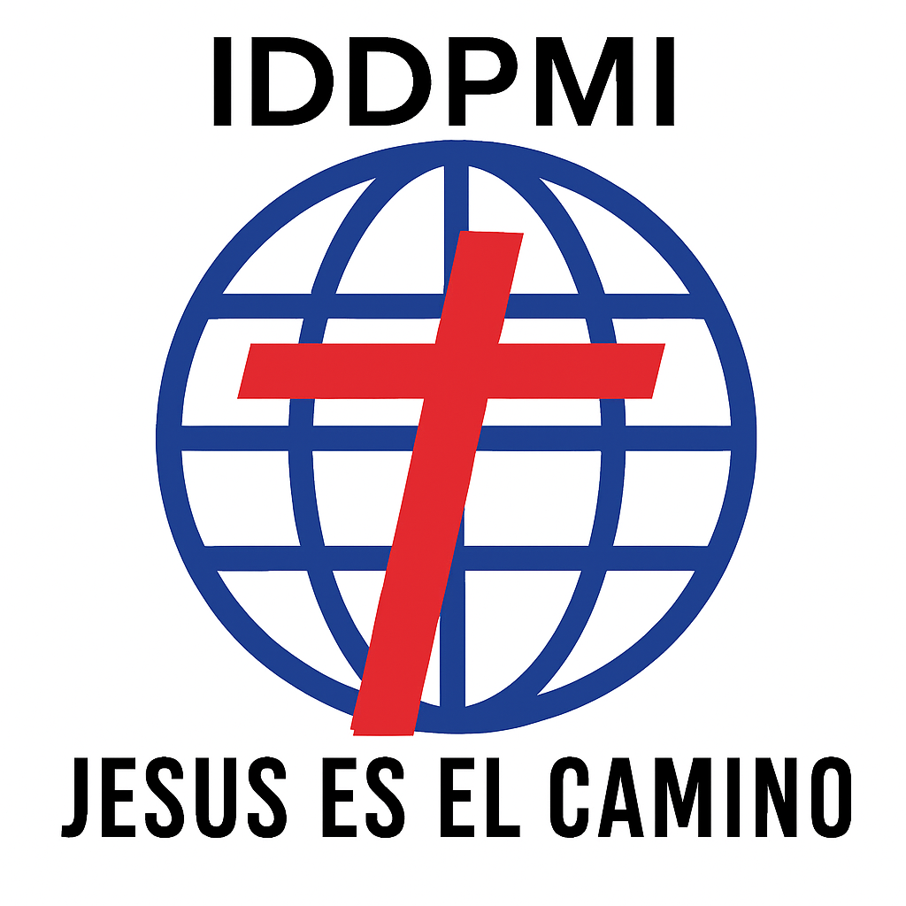

☰
Inicio
¿Quién es Jesús?
Quiénes Somos
Creemos
El Creyente
Devocionales
Galería de Fotos
Contáctanos
QUEREMOS ORAR POR TI
Envíanos tus peticiones, tenemos fe de que Dios contesta las oraciones de su pueblo
En la iglesia Jesús es el Camino, vemos la mano de Dios moverse poderosamente a través de su Espíritu Santo,
salvando, sanando, libertando y restaurando vidas
Formulario de Petición de Oración
Petición de Oración
Nombre y Apellido
Teléfono
Mensaje
Doy consentimiento para que la iglesia Jesús es el Camino almacene estos datos para poder ponerme en contacto conmigo.
Enviar Petición